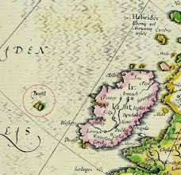
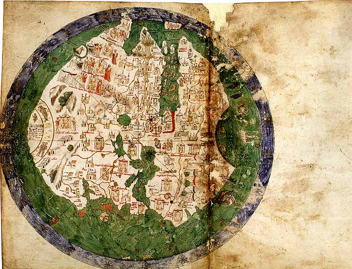
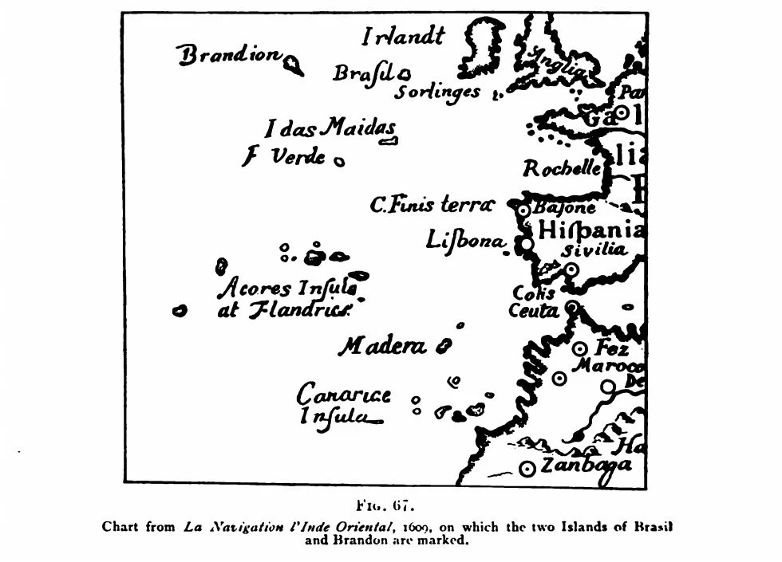
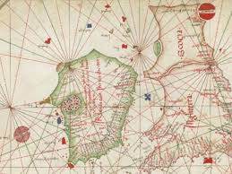
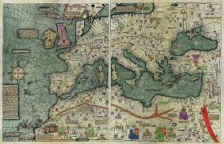
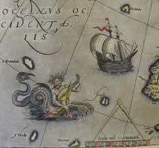

BRASIL(Hy-brasil)

Introduction
Map-readers knew about Brasil long before America was discovered; but they didn’t think of it as a giant country on a distant continent. Brasil, also known by the name Hy-Brasil , was a small, mist-shrouded island in the North Atlantic, not too far off Ireland’s west coast. Alexander von Humboldt points out, in his work Critical Examination of the History and Geography of the New Continent in the 15th and 16th Centuries, that many maritime charts, portolan charts and world maps, dating from the 14th century onwards, depict an island located most often in the North Atlantic. This island, whose size varies according to the sources, appears under various but similar names: Brasile, Bracie, Bresily, Bersil, Brazilæ, Bresilji, Braxilis, Branzilæ, O'Brasil, O'Brassil. In Irish mythology, an island called Hi-Brasil, Hy-Breasal, Hy-Brazil, Hy-Breasil or Brazir is mentioned and located off the coast of Ireland or in the vicinity of the Azores archipelago. This island was said to have been inhabited by Irish monks.
In Celtic folklore, this island country takes its name from Breasal, the High King of the World. However, as the Atlantic began to be more thoroughly explored, the name of Hy Brazil may have been attached to a real place, providing some evidence that attached itself to the Irish myth
Many ancient cultures have located their afterworlds in the west, believing souls slip into paradise like the sun slips below the horizon. Irish lore came to identify Hy-Brasil as both a land of the dead and a fairy realm, which was said to emerge from a blanket of fog or rise up from below the waves once every seven years.
In the 1470s, Spanish Basque chronicler Lope García de Salazar recounted an English legend that after King Arthur’s death, his sister Morgan Le Fay laid him to rest on Hy-Brasil and “enchanted that island so no ship can find it”. Curiously, Salazar claimed that the enchantment lost its power “if the ship can see the island before the island the ship”. You’d have to sneak up on Hy-Brasil like you were playing a watery game of Statues.
The generally accepted theory states that it was renamed for the brazilwood, which has an extreme red color (so “brasil” derivated from “brasa”: ember), a plant very valuable in Portuguese commerce and abundant in the new-found land.
The most distinctive geographical feature of Hy-Brasil, is that it appears on maps as a perfect circle, with a semi-circular channel through the center. The central image on the Brazilian flag, a circle with a channel across the center, was the symbol for Hy-Brasil on early maps.
Literary
Irish Mythology and Folklore
Irish mythology describes Hy-Brasil as a mysterious island hidden behind the mist, invisible to the human eye except for one day every seven years, when travelers can reach it. In Irish oral tradition, it is said that the island vanishes whenever humans approach. These tales were later recorded in printed folklore collections, such as "Irish Wonders" (1888), which reports that residents of County Cork allegedly sighted the floating island on July 7, 1878.
Origins of the Island on Maps
One story suggests that the island’s appearance on maps originated from an early Irish mapmaker who added it based on folklore rather than observation. Subsequent cartographers copied the feature, and over time, the repetition of this error led many to believe in its existence. Some theories even speculate that the legend may have originated from a time when the island had not yet submerged, although this would imply geological changes tens of thousands of years ago.
Appearance in Historical Maps
In 1375, the Catalan Atlas created by Abraham Cresques depicted Hy-Brasil as two small islands.
In 1436, cartographer Andrea Bianco included “Insula de Brasil” in his nautical chart. It was drawn approximately the size of Portugal, featuring seven trefoil-shaped bays representing seven cities. In his later 1448 map, however, the island was omitted, possibly reflecting a shift in geographic knowledge
In 1595, the island reappeared in Abraham Ortelius’ Theatrum Orbis Terrarum, a major European atlas. It continued to appear on maps until the mid-19th century, eventually shrinking in representation until it became “Brasil Rock” in 1865.

Exploration attempts
During the 17th century, several expeditions were launched in search of Hy-Brasil. Leslie of Glaslough, described as a “wise man and scholar,” was so convinced of the island’s existence that he petitioned King Charles I for a grant to claim it. Edmond Ludlow, a prominent republican, also chartered a ship from Limerick to look for it. In 1674, Captain John Nisbet reportedly reached the island after a fog cleared. He sent four crew members ashore, who returned with gold and silver given to them by an old man. A subsequent voyage by Captain Alexander Johnson allegedly confirmed Nisbet’s account
Legends Surrounding Hy-Brasil
Various myths are associated with Hy-Brasil:
Some legends claim it was home to the gods of Irish mythology.
Others say monks possessing ancient knowledge lived there, knowledge so advanced it supposedly enabled the rise of later civilizations.
Some scholars link St. Brendan’s legendary voyage in search of the “Promised Land” to Hy-Brasil.
In modern interpretations, Graham Hancock, in his 2009 book Underworld, proposed that Hy-Brasil’s repeated appearance on maps indicated the survival of a pre-Ptolemaic map corpus showing sunken lands.
John Cabot, the Italian explorer working for England, wanted to find it. He set sail in May 1498 and never returned. Some believe he reached Hy-Brasil; if so, he is the only one, as five centuries of subsequent attempts have come to nothing.
Symbolism and Geographic Features
Hy-Brasil was often depicted as a perfect circle split by a semicircular channel. Some researchers have even suggested that this circular motif may have influenced the central emblem of the Brazilian flag.
The Naming Controversy
There is debate over whether the country of Brazil derived its name from the phantom island. Proponents argue that it fits the historical pattern of applying names of mythical places (e.g., Antillia becoming the Antilles) to real locations. Opponents contend that Brazil was originally called Terra de Santa Cruz (“Land of the Holy Cross”) and only later renamed after the valuable pau-brasil wood, whose name likely comes from an old root word for “red.”
Natural Explanations
Local tradition in County Mayo suggests that the Hy-Brasil myth may have arisen from optical illusions. On exceptionally sunny days, it is said that one can see a reflection of the coastline appearing like an island offshore, creating the illusion of land where none exists.
Hy-Brasil in Popular Culture
Hy-Brasil has also appeared in modern media. In the 1989 film Erik the Viking, it is portrayed as the location of the “Horn Resounding,” which allows mortals to enter Asgard. In the film, spilling blood on its shores causes the island to sink beneath the waves forever
Location
Most maps place it 200 miles off the west coast of Ireland in the North Atlantic. It looks like an oval with a river flowing inside it from east to west.
In the famous UFO encounter, commonly known as the Rendlesham Forest incident, a strange craft was said to have landed outside an American military base and soldier Jim Penniston claimed to have touched the craft. as well as receiving 16 pages of binary code telepathically. The next day, he wrote the entire code down on paper and then translated it. This code sequence lists in quite detail the coordinates of Hy-Brasil and the locations that ancient cartographers drew on the map. It also mentions many other structures such as the Giza pyramid and the Nazca Lines. At the bottom of the code, Hy-Brasil coordinates are listed again with the base year 8100.
Wood-Martin tells us that in the 17th century, Roderick O'Flaherty said that the phantom island of Hy-Brasil – marked on many old charts near the west coast of Ireland – was, in his time, "often visible". The subject has inspired several poets with beautiful fancies which have been woven into pathetic ballads. Gerald Griffin describes it thus:
"On the ocean that hollows the rocks where ye dwell A shadowy land has appeared, as they tell: Men thought it a region of sunshine and rest, And they called it Hy-Brasil, the isle of the Blest. From year unto year on the ocean's blue rim, The beautiful spectre showed lovely and dim: The golden clouds curtained the deep where it lay, And it looked like an Eden away, far away!"
A rare work entitled La Naviation l'Inde Orientale, printed at Amsterdam in the year 1609, contains a map on which two islands, styled Brasil and Brandon, are marked as actually existing off the Irish coast. is a reproduction of that portion of the place above referred to. is a chart by the French Geographer Royal made in the year 1634, on which the island of Hy Brasil is also distinctly marked.

Maps




There is also another consideration with regard to this phenomenon which has not been sufficiently taken into consideration. We cannot see objects below the horizon, but sometimes, owing to the peculiar state of the atmosphere, the rays of light are so bent that, when they reach the eye, they make distant objects visible. For instance, place a coin in a saucer, so as to be hidden from observation, pour water into the vessel, and though the coin is below the horizon it becomes at once visible. This reflection, usually seen across water, is among sailors known as "looming"; the objects that "loom" are magnified vertically, and seem unnaturally near. Snowdon, in Wales, is thus occasionally seen by pilots in Dublin Bay, though it is over one hundred miles distant.
People
The residents of Ballycotton in County Cork were excited by the sudden appearance of an island far offshore that it was not known to exist. The men of the town and island of Ballycotton were fishermen, and they were well acquainted with the sea and the land. The day before, they had sailed and headed for the place where the strange island now stood, and they there is no doubt that it is the best fishing ground they have.
Hy-Brasil has also been identified with Porcupine Bank, a shoal in the Atlantic Ocean about 200 kilometres (120 mi) west of Ireland[19] and discovered in 1862. As early as 1870, a paper was read to the Geological Society of Ireland suggesting this identification. The suggestion has since appeared more than once, e.g., in an 1883 edition of Notes and Queries.
Each technological innovation of the following centuries would serve as a pretext for a new attempt: the hot-air balloon, the steamship, the transatlantic liner, the submarine, the airship, the airplane. In 1939, a few weeks before the invasion of Poland, Hitler sought to prove one thing or another about Aryan superiority by sending a U-boat there. The submarine found nothing, not even a feature that could be the submerged island. Yet, at 7:07 a.m. on July 7, the island was there in its entirety, from the seabed to the surface. But when the U-boat headed toward it, an instrument problem always caused it to deviate from its trajectory. Hitler took it personally, denouncing an Anglo-American Zionist plot.